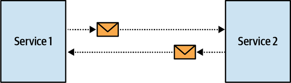
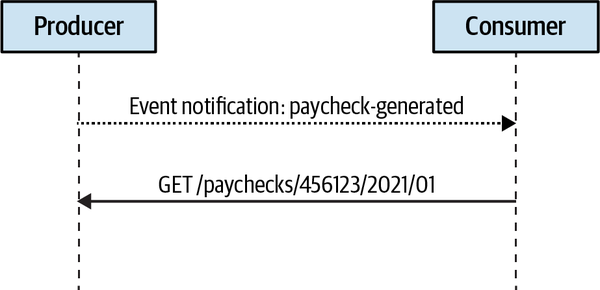
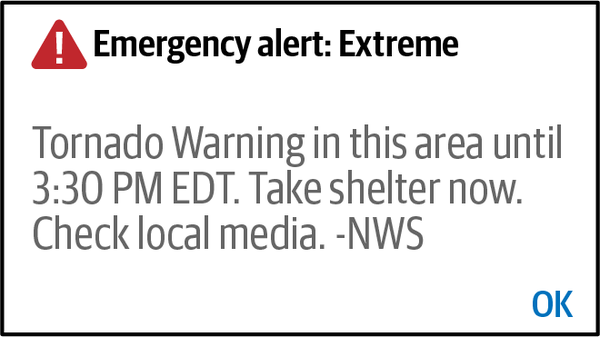
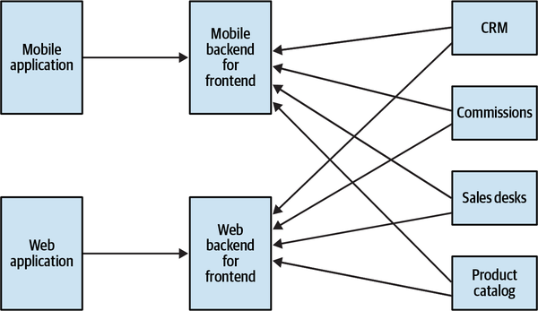
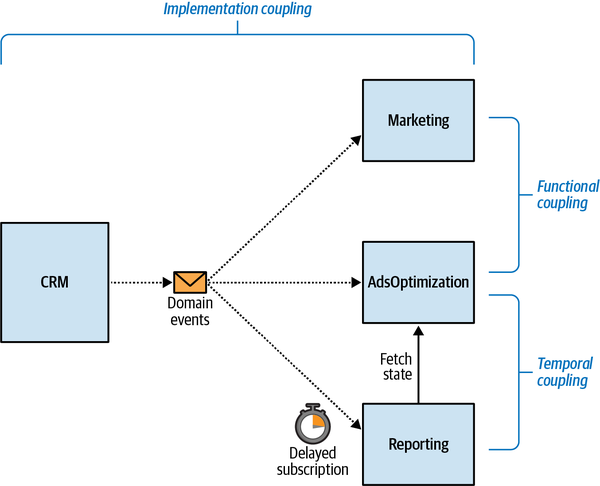
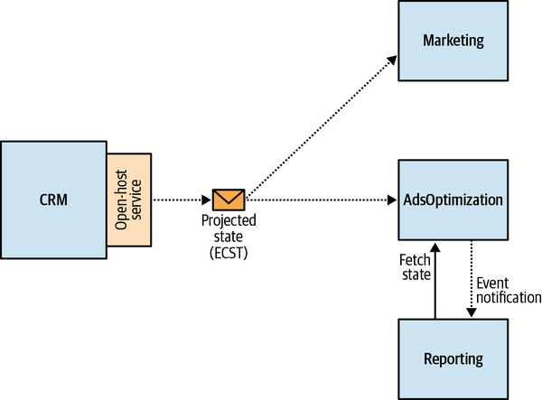

As microservices, event-driven architecture (EDA) is ubiquitous in modern distributed systems. Many advise using event-driven communication as the default integration mechanism when designing loosely coupled, scalable, fault-tolerant distributed systems.
Event-driven architecture is often linked to domain-driven design. After all, EDA is based on events, and events are prominent in DDD—we have domain events, and when needed, we even use events as the system’s source of truth. It may be tempting to leverage DDD’s events as the basis for using event-driven architecture. But is this a good idea?
Events are not a kind of secret sauce that you can just pour over a legacy system and turn it into a loosely coupled distributed system. Quite the opposite: careless application of EDA can turn a modular monolith into a distributed big ball of mud.
In this chapter, we will explore the interplay between EDA and DDD. You will learn the essential building blocks of event-driven architecture, common causes for failed EDA projects, and how you can leverage DDD’s tools to design effective, asynchronously integrated systems.
Stated simply, event-driven architecture is an architectural style in which a system’s components communicate with one another asynchronously by exchanging event messages (see Figure 15-1). Instead of calling the services’ endpoints synchronously, the components publish events to notify other system elements of changes in the system’s domain. The components can subscribe to events raised in the system and react accordingly. A typical example of an event-driven execution flow is the saga pattern that was described in Chapter 9.

It’s important to highlight the difference between event-driven architecture and event sourcing. As we discussed in Chapter 7, event sourcing is a method for capturing changes in state as a series of events.
Although both event-driven architecture and event sourcing are based on events, the two patterns are conceptually different. EDA refers to the communication between services, while event sourcing happens inside a service. The events designed for event sourcing represent state transitions (of aggregates in an event-sourced domain model) implemented in the service. They are aimed at capturing the intricacies of the business domain and are not intended to integrate the service with other system components.
As you will see later in this chapter, there are three types of events, and some are more suited for integration than others.
In an EDA system, the exchange of events is the key communication mechanism for integrating the components and making them a system. Let’s take a look at events in more detail and see how they differ from messages.
So far, the definition of an event is similar to the definition of the message pattern.1 However, the two are different. An event is a message, but a message is not necessarily an event. There are two types of messages:
An event is something that has already happened, whereas a command is an instruction to do something. Both events and commands can be communicated asynchronously as messages. However, a command can be rejected: the command’s target can refuse to execute the command, for example, if the command is invalid or if it contradicts the system’s business rules. A recipient of an event, on the other hand, cannot cancel the event. The event describes something that has already happened. The only thing that can be done to overturn an event is to issue a compensating action—a command, as it’s carried out in the saga pattern.
Since an event describes something that has already happened, an event’s name should be formulated in the past tense: for example, DeliveryScheduled, ShipmentCompleted, or DeliveryConfirmed.
An event is a data record that can be serialized and transmitted using the messaging platform of choice. A typical event schema includes the event’s metadata and its payload—the information communicated by the event:
{"type":"delivery-confirmed","event-id":"14101928-4d79-4da6-9486-dbc4837bc612","correlation-id":"08011958-6066-4815-8dbe-dee6d9e5ebac","delivery-id":"05011927-a328-4860-a106-737b2929db4e","timestamp":1615718833,"payload":{"confirmed-by":"17bc9223-bdd6-4382-954d-f1410fd286bd","delivery-time":1615701406}}
An event’s payload not only describes the information conveyed by the event, but also defines the event’s type. Let’s discuss the three types of events in detail and how they differ from one another.
Events can be categorized into one of three types:2 event notification, event-carried state transfer, or domain events.
An event notification is a message regarding a change in the business domain that other components will react to. Examples include PaycheckGenerated and CampaignPublished, among others.
The event notification should not be verbose: the goal is to notify the interested parties about the event, but the notification shouldn’t carry all the information needed for the subscribers to react to the event. For example:
{"type":"paycheck-generated","event-id":"537ec7c2-d1a1-2005-8654-96aee1116b72","delivery-id":"05011927-a328-4860-a106-737b2929db4e","timestamp":1615726445,"payload":{"employee-id":"456123","link":"/paychecks/456123/2021/01"}}
In the preceding code, the event notifies the external components of a paycheck that was generated. It doesn’t carry all the information related to the paycheck. Instead, the receiver can use the link to fetch more detailed information. This notification flow is depicted in Figure 15-2.

In a sense, integration through event notification messages is similar to the Wireless Emergency Alert (WEA) system in the United States and EU-Alert in Europe (see Figure 15-3). The systems use cell towers to broadcast short messages, notifying citizens about public health concerns, safety threats, and other emergencies. The systems are limited to sending messages with a maximum length of 360 characters. This short message is enough to notify you about the emergency, but you have to proactively use other information sources to get more details.

Succinct event notifications can be preferable in multiple scenarios. Let’s take a closer look at two: security and concurrency.
Due to the asynchronous nature of event-driven integration, the information can already be rendered stale when it reaches the subscribers. If the information’s nature is sensitive to race conditions, querying it explicitly allows getting the up-to-date state.
Furthermore, in the case of concurrent consumers, where only one subscriber should process an event, the querying process can be integrated with pessimistic locking. This ensures the producer’s side that no other consumer will be able to process the message.
Event-carried state transfer (ECST) messages notify subscribers about changes in the producer’s internal state. Contrary to event notification messages, ECST messages include all the data reflecting the change in the state.
ECST messages can come in two forms. The first is a complete snapshot of the modified entity’s state:
{"type":"customer-updated","event-id":"6b7ce6c6-8587-4e4f-924a-cec028000ce6","customer-id":"01b18d56-b79a-4873-ac99-3d9f767dbe61","timestamp":1615728520,"payload":{"first-name":"Carolyn","last-name":"Hayes","phone":"555-1022","status":"follow-up-set","follow-up-date":"2021/05/08","birthday":"1982/04/05","version":7}}
The ECST message in the preceding example includes a complete snapshot of a customer’s updated state. When operating large data structures, it may be reasonable to include in the ECST message only the fields that were actually modified:
{"type":"customer-updated","event-id":"6b7ce6c6-8587-4e4f-924a-cec028000ce6","customer-id":"01b18d56-b79a-4873-ac99-3d9f767dbe61","timestamp":1615728520,"payload":{"status":"follow-up-set","follow-up-date":"2021/05/10","version":8}}
Whether ECST messages include complete snapshots or only the updated fields, a stream of such events allows consumers to hold a local cache of the entities’ states and work with it. Conceptually, using event-carried state transfer messages is an asynchronous data replication mechanism. This approach makes the system more fault tolerant, meaning that the consumers can continue functioning even if the producer is not available. It is also a way to improve the performance of components that have to process data from multiple sources. Instead of querying the data sources each time the data is needed, all the data can be cached locally, as shown in Figure 15-4.

The third type of event message is the domain event that we described in Chapter 6. In a way, domain events are somewhere between event notification and ECST messages: they both describe a significant event in the business domain, and they contain all the data describing the event. Despite the similarities, these types of messages are conceptually different.
Both domain events and event notifications describe changes in the producer’s business domain. That said, there are two conceptual differences.
First, domain events include all the information describing the event. The consumer does not need to take any further action to get the complete picture.
Second, the modeling intent is different. Event notifications are designed with the intent to alleviate integration with other components. Domain events, on the other hand, are intended to model and describe the business domain. Domain events can be useful even if no external consumer is interested in them. That’s especially true in event-sourced systems, where domain events are used to model all possible state transitions. Having external consumers interested in all the available domain events would result in suboptimal design. We will discuss this in greater detail later in this chapter.
The data contained in domain events is conceptually different from the schema of a typical ECST message.
An ECST message provides sufficient information to hold a local cache of the producer’s data. No single domain event is supposed to expose such a rich model. Even the data included in a specific domain event is not sufficient for caching the aggregate’s state, as other domain events that the consumer is not subscribed to may affect the same fields.
Furthermore, as in the case of notification events, the modeling intent is different for the two types of messages. The data included in domain events is not intended to describe the aggregate’s state. Instead, it describes a business event that happened during its lifecycle.
Here is an example that demonstrates the differences between the three types of events. Consider the following three ways to represent the event of marriage:
eventNotification={"type":"marriage-recorded","person-id":"01b9a761","payload":{"person-id":"126a7b61","details":"/01b9a761/marriage-data"}};ecst={"type":"personal-details-changed","person-id":"01b9a761","payload":{"new-last-name":"Williams"}};domainEvent={"type":"married","person-id":"01b9a761","payload":{"person-id":"126a7b61","assumed-partner-last-name":true}};
marriage-recorded is an event notification message. It contains no information except the fact that the person with the specified ID got married. It contains minimal information about the event, and the consumers interested in more details will have to follow the link in the details field.
personal-details-changed is an event-carried state transfer message. It describes the changes in the person’s personal details, namely that their last name has been changed. The message doesn’t explain the reason why it has changed. Did the person get married or divorced?
Finally, married is a domain event. It is modeled as close as possible to the nature of the event in the business domain. It includes the person’s ID and a flag indicating whether the person assumed their partner’s name.
As we discussed in Chapter 3, software design is predominantly about boundaries. Boundaries define what belongs inside, what remains outside, and most importantly, what goes across the boundaries—essentially, how the components are integrated with one another. The events in an EDA-based system are first-class design elements, affecting both how the components are integrated and the components’ boundaries themselves. Choosing the correct type of event message is what makes (decouples) or breaks (couples) a distributed system.
In this section, you will learn heuristics for applying different event types. But first, let’s see how to use events to design a strongly coupled, distributed big ball of mud.
Consider the system shown in Figure 15-5.
The CRM bounded context is implemented as an event-sourced domain model. When the CRM system had to be integrated with the Marketing bounded context, the teams decided to leverage the event-sourced data model’s flexibility and let the consumer—in this case, Marketing—subscribe to the CRM’s domain events and use them to project the model that fits their needs.
When the AdsOptimization bounded context was introduced, it also had to process the information produced by the CRM bounded context. Again, the teams decided to let AdsOptimization subscribe to all domain events produced in the CRM and project the model that fits AdsOptimization’s needs.

Interestingly, both the Marketing and AdsOptimization bounded contexts had to present the customers’ information in the same format, and hence ended up projecting the same model out of the CRM’s domain events: a flattened snapshot of each customer’s state.
The Reporting bounded context subscribed only to a subset of domain events published by the CRM and used as event notification messages to fetch the calculations performed in the AdsOptimization context. However, since both AdsOptimization and Reporting bounded contexts use the same events to trigger their calculations, to ensure that the Reporting model is updated the AdsOptimization context introduced a delay. It processed messages five minutes after receiving them.
This design is terrible. Let’s analyze the types of coupling in this system.
The AdsOptimization and Reporting bounded contexts are temporally coupled: they depend on a strict order of execution. The AdsOptimization component has to finish its processing before the Reporting module is triggered. If the order is reversed, inconsistent data will be produced in the Reporting system.
To enforce the required execution order, the engineers introduced the processing delay in the Reporting system. This delay of five minutes lets the AdsOptimization component finish the required calculations. Obviously, this doesn’t prevent incorrect order of execution:
AdsOptimization may be overloaded and unable to finish the processing in five minutes.
A network issue may delay the delivery of incoming messages to the AdsOptimization service.
The AdsOptimization component can experience an outage and stop processing incoming messages.
The Marketing and AdsOptimization bounded contexts both subscribed to the CRM’s domain events and ended up implementing the same projection of the customers’ data. In other words, the business logic that transforms incoming domain events into a state-based representation was duplicated in both bounded contexts, and it had the same reasons for change: they had to present the customers’ data in the same format. Therefore, if the projection was changed in one of the components, the change had to be replicated in the second bounded context.
That’s an example of functional coupling: multiple components implementing the same business functionality, and if it changes, both components have to change simultaneously.
This type of coupling is more subtle. The Marketing and AdsOptimization bounded contexts are subscribed to all the domain events generated by the CRM’s event-sourced model. Consequently, a change in the CRM’s implementation, such as adding a new domain event or changing the schema of an existing one, has to be reflected in both subscribing bounded contexts! Failing to do so can lead to inconsistent data. For example, if an event’s schema changes, the subscribers’ projection logic will fail. On the other hand, if a new domain event is added to the CRM’s model, it can potentially affect the projected models, and thus, ignoring it will lead to projecting an inconsistent state.
As you can see, blindly pouring events on a system makes it neither decoupled nor resilient. You may assume that this is an unrealistic example, but unfortunately, this example is based on a true story. Let’s see how the events can be adjusted to improve the design dramatically.
Exposing all the domain events constituting the CRM’s data model couples the subscribers to the producer’s implementation details. The implementation coupling can be addressed by exposing either a much more restrained set of events or a different type of events.
The Marketing and AdsOptimization subscribers are functionally coupled to each other by implementing the same business functionality.
Both implementation and functional coupling can be tackled by encapsulating the projection logic in the producer: the CRM bounded contexts. Instead of exposing its implementation details, the CRM can follow the consumer-driven contract pattern: project the model needed by the consumers and make it a part of the bounded context’s published language—an integration-specific model, decoupled from the internal implementation model. As a result, the consumers get all the data they need and are not aware of the CRM’s implementation model.
To tackle the temporal coupling between the AdsOptimization and Reporting bounded contexts, the AdsOptimization component can publish an event notification message, triggering the Reporting component to fetch the data it needs. This refactored system is shown in Figure 15-6.

Matching types of events to the tasks at hand makes the resultant design orders of magnitude less coupled, more flexible, and fault tolerant. Let’s formulate the design heuristics behind the applied changes.
As Andrew Grove put it, only the paranoid survive.3 Use this as a guiding principle when designing event-driven systems:
The network is going to be slow.
Servers will fail at the most inconvenient moment.
Events will arrive out of order.
Events will be duplicated.
Most importantly, these events will occur most frequently on weekends and public holidays.
The word driven in event-driven architecture means your whole system depends on successful delivery of the messages. Hence, avoid the “things will be okay” mindset like the plague. Ensure that the events are always delivered consistently, no matter what:
Use the outbox pattern to publish messages reliably.
When publishing messages, ensure that the subscribers will be able to deduplicate the messages and identify and reorder out-of-order messages.
Leverage the saga and process manager patterns when orchestrating cross-bounded context processes that require issuing compensating actions.
Be wary of exposing implementation details when publishing domain events, especially in event-sourced aggregates. Treat events as an inherent part of the bounded context’s public interface. Therefore, when implementing the open-host service pattern, ensure that the events are reflected in the bounded context’s published language. Patterns for transforming event-based models are discussed in Chapter 9.
When designing bounded contexts’ public interfaces, leverage the different types of events. Event-carried state transfer messages compress the implementation model into a more compact model that communicates only the information the consumers need.
Event notification messages can be used to further minimize the public interface.
Finally, sparingly use domain events for communication with external bounded contexts. Consider designing a set of dedicated public domain events.
When designing event-driven communication, evaluate the bounded contexts’ consistency requirements as an additional heuristic for choosing the event type:
If the components can settle for eventually consistent data, use the event-carried state transfer message.
If the consumer needs to read the last write in the producer’s state, issue an event notification message, with a subsequent query to fetch the producer’s up-to-date state.
This chapter presented event-driven architecture as an inherent aspect of designing a bounded context’s public interface. You learned the three types of events that can be used for cross-bounded context communication:
Using inappropriate types of events will derail an EDA-based system, inadvertently turning it into a big ball of mud. To choose the correct type of events for integration, evaluate the bounded contexts’ consistency requirements and be wary of exposing implementation details. Design an explicit set of public and private events. Finally, ensure that the system delivers the messages, even in the face of technical issues and outages.
Which of the following statements are correct? Select all that apply.
Event-driven architecture defines the events intended to travel across components’ boundaries.
Event sourcing defines the events that are intended to stay within the bounded context’s boundary.
Event-driven architecture (EDA) and event sourcing are different terms for the same pattern.
What type of event is best suited for communicating changes in state?
Event notification
Event-carried state transfer
Domain event
All event types are equally good for communicating changes in state.
Which bounded context integration pattern calls for explicitly defining public events?
Open-host service
Anticorruption layer
Shared kernel
Conformist
The services S1 and S2 are integrated asynchronously. S1 has to communicate data and S2 needs to be able to read the last written data in S1. Which type of event fits this integration scenario?
S1 should publish event-carried state transfer events.
S1 should publish public event notifications, which will signal S2 to issue a synchronous request to get the most up-to-date information.
S1 should publish domain events.
1 Hohpe, G., & Woolf, B. (2003). Enterprise Integration Patterns: Designing, Building, and Deploying Messaging Solutions. Boston: Addison-Wesley.
2 Fowler, M. (n.d.). What do you mean by “Event-Driven”? Retrieved August 12, 2021, from Martin Fowler (blog).
3 Grove, A. S. (1998). Only the Paranoid Survive. London: HarperCollins Business.